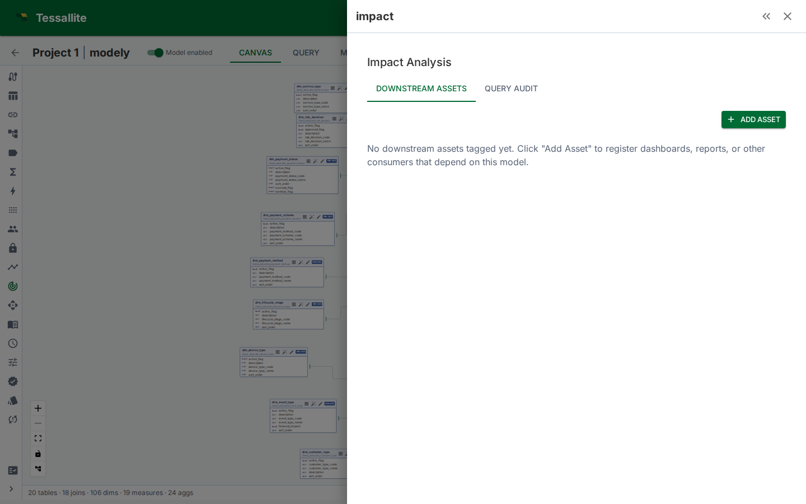

Impact Analysis
What this covers

Impact analysis shows which downstream assets — dashboards, reports, ML pipelines, APIs, scheduled jobs — depend on your model's tables and columns. Before making a breaking change (renaming a column, dropping a table, changing a measure expression), impact analysis tells you what will break and who to notify. This article explains how to register downstream assets, how the source audit scanner works, and how to read the Impact panel.
Why impact analysis matters
Renaming a column in a semantic model is a safe operation inside Tessallite — the platform resolves it. But downstream consumers outside Tessallite (dashboards that hard-code column names, scripts that query via JDBC, ML pipelines that SELECT specific columns) will break silently. Impact analysis makes these invisible dependencies visible before you commit the change.
Two sources of dependency information
Manual tagging
You register downstream assets by hand. This is the primary method and gives the most control over what's tracked.
- Open the Impact panel in Model Builder (Toolbelt sidebar).
- Click Add Asset.
- Enter the asset details:
- Name (e.g. "Sales Dashboard", "Weekly Revenue Report")
- Type (Dashboard, Report, ML Pipeline, API, Scheduled Job, Other)
- Owner (person or team responsible)
- URL (optional link to the asset)
- Under Column Dependencies, select which specific columns this asset depends on.
- Click Save.
Source audit scanning
Tessallite can read query logs from the source database to discover which tables and columns are being queried. The scan finds references to your model's physical tables in the source's query history.
To run a scan:
- Open the Impact panel.
- Switch to the Source Audit tab.
- Click Scan. Tessallite queries the source's query log (e.g.
pg_stat_statementsfor PostgreSQL,INFORMATION_SCHEMA.JOBSfor BigQuery). - Review the discovered references. Each entry shows the query pattern, frequency, and which columns were referenced.
Source audit scanning is supplementary — it can find consumers you forgot to tag manually, but it only works for sources that expose query logs.
Reading the Impact panel
Summary bar
Shows at a glance:
- Total downstream assets registered
- Column coverage — what percentage of model columns have at least one tagged dependency
Downstream assets list
Each asset shows:
- Name, type, and owner
- Number of column dependencies
- Last updated timestamp
Click an asset to see its full column dependency list and edit it.
Source audit tab
Shows:
- Discovered query patterns referencing model tables
- Frequency counts (how often each pattern appears in the log)
- Column-level references extracted from the queries
When to use impact analysis
- Before renaming or removing columns. Check which assets depend on the column.
- Before dropping a table from the model. Any asset that references columns on that table will break.
- Before changing measure expressions. If a measure's semantics change (e.g. switching from SUM to AVG), downstream reports may produce incorrect numbers.
- During model reviews. The summary bar shows column coverage — low coverage means many columns have unknown consumers.
Best practices
- Tag assets at column level. Knowing that "Sales Dashboard" depends on the model is less useful than knowing it depends on
revenue,order_date, andregion. Column-level dependencies make impact assessment actionable. - Keep asset tags current. When a dashboard is retired or a report changes its column set, update the asset entry.
- Run source audits periodically. New consumers may appear that weren't manually tagged.
- Review before breaking changes. Make impact analysis part of your pre-change checklist.